1. Purpose
This page shows, at a glance, how the three roles use RMS and in what order: the RMS Administrator sets the system up, the Test Planner plans and allocates work against that setup, and the Test Technician executes and reports on it — with status flowing back to the Planner's Dashboard. It is a companion to the SRS (Section 5, User Roles) and the ER model, aimed at a reader who wants the workflow picture before the data model.
2. Overview: All Three Roles

Source: usage-flow-overview.mmd. Regenerate with:
npx @mermaid-js/mermaid-cli -i docs/usage-flow-overview.mmd -o docs/usage-flow-overview.svg -b white
Setup (Administrator) is typically a one-time or occasional activity; planning and execution (Planner and Technician) repeat continuously per project. The dashed feedback arrow is the point of the whole redesign: a technician's result is the single source of truth the Planner's Dashboard reads from, not a separately re-typed status (see SRS BR-001).
3. RMS Administrator
Capabilities and resources come first, since everything else (capability assignment, exclusion groups, activity templates) refers back to them. Users and staff absences can be set up any time after. This same diagram appears at the top of the Admin page in the running app.
Source: usage-role-admin.mmd. Regenerate with:
npx @mermaid-js/mermaid-cli -i docs/usage-role-admin.mmd -o docs/usage-role-admin.svg -b white
4. Test Planner
A project (customer order) is created, optionally split into EUTs for a multi-unit order, then populated with test activities either one at a time or in bulk from a standard activity template. Resources are assigned once the required capability is known. The Schedule and Dashboard are where the Planner watches it all play out afterward. This same diagram appears at the top of the Planner page in the running app.
Source: usage-role-planner.mmd. Regenerate with:
npx @mermaid-js/mermaid-cli -i docs/usage-role-planner.mmd -o docs/usage-role-planner.svg -b white
5. Test Technician
A technician only ever sees the tests allocated to their linked resource. Once a work order is started and run against its procedure, the technician fills in and submits a test report; a different technician or a planner then approves or rejects it. This same diagram appears at the top of the Technician dashboard in the running app.
Source: usage-role-technician.mmd. Regenerate with:
npx @mermaid-js/mermaid-cli -i docs/usage-role-technician.mmd -o docs/usage-role-technician.svg -b white